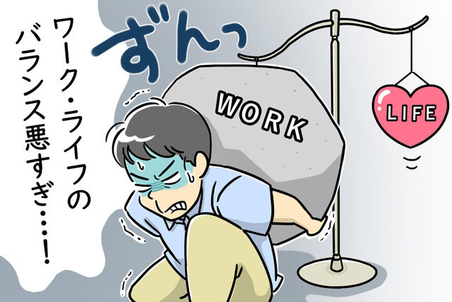
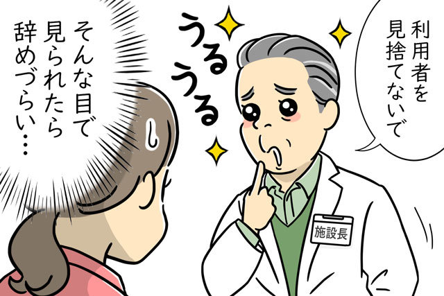
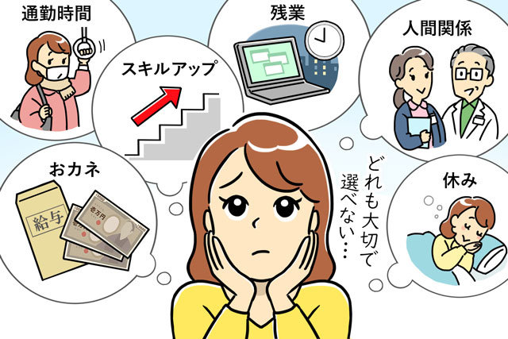
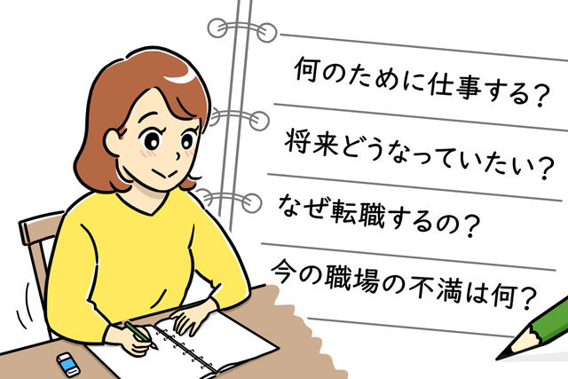
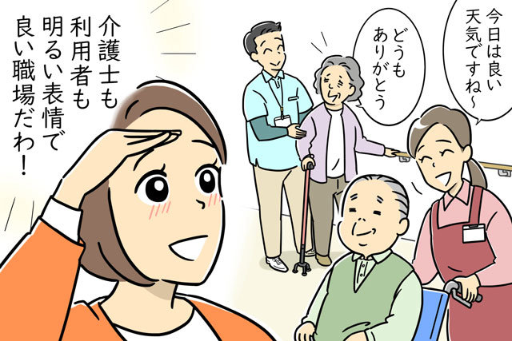
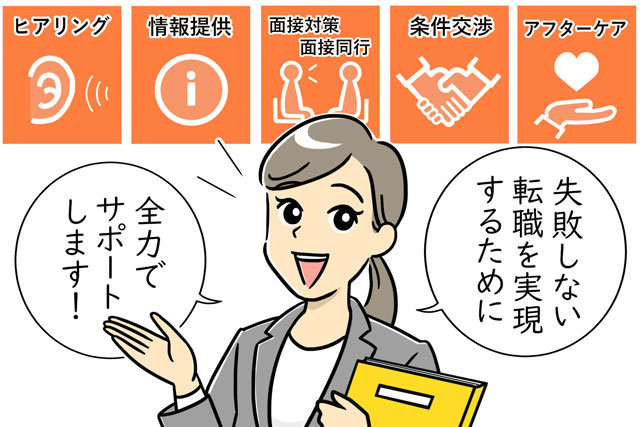

【要注意】介護職の転職でよくある失敗理由と気をつけるべきポイントとは
将来にわたって確実な需要が見込まれ、人材確保のために広く未経験者にも門戸を開いている介護職は、転職市場における人気職種のひとつです。しかし、介護職への転職は、誰もが成功しているわけではなく、新規転職者で辞める人のほとんどは、3ヵ月以内に辞めてしまっているのが現状です。
ここでは、転職後、すぐに辞めるような「転職失敗」はなぜ起きてしまうのか。また、失敗しないためには何に気を付ければいいのかについてご紹介します。
介護業界への転職後、なぜすぐ辞めてしまったのか？
介護業界に転職したもののすぐに辞めてしまい、「転職失敗」と捉えてしまった方もいらっしゃるのではないでしょうか。実際に、これは決して珍しい話ではないのです。
介護職にせっかく転職したのにすぐに辞めてしまう理由は、下記のようにいろいろあるようです。
人手が足りず、激務すぎる環境だった
介護職は早番、日勤、遅番、夜勤の4交替シフト勤務が一般的です。また、夜勤明けには休みを入れることが通常です。しかし、中には人手が足りないことを理由に、夜勤明けの日も出勤を要請してくる施設があります。
このような施設は、辞めようとすると「利用者を残して辞めるのか」と言われるなど、モラハラを受けたりする場合もあります。
事前に聞いていた雇用条件と実際の雇用条件が違う
企業が新しく人を雇うときは、「労働条件通知書」を作成して採用者に渡し、その内容を覚書として交わすことが一般的です。しかし、介護施設を運営する企業や法人の中には、条件は口頭で伝えるのみで、労働条件通知書を出さないところもあります。
その結果、給与をはじめとする諸条件が「聞いていたのと違う」といったトラブルにつながることがあるのです。
教えてもらえる環境になかった
慢性的な人手不足で忙しすぎる職場は、未経験者が入ってきても時間をとって教育する余裕がありません。
ですから、新しく入った方は、その施設のルールなどを教えてもらえないまま業務にあたることになり、戸惑ってしまったり、ミスを起こしてしまったり、利用者を困らせてしまったりといった状況に陥ります。
人間関係のトラブルがあった
人間関係のトラブルは、どんな職場でも人が辞める理由のひとつに挙げられます。介護職でよく聞かれるのは、30代、40代での転職者と、転職先にいる若い世代との言葉遣いや態度によるトラブルです。
この場合、必ずしも30代、40代の転職者だけに問題があるわけではありませんが、いづらさを感じてしまうのは後から入ってきた転職者のほうになってしまうことが多いです。
理想と現実とのずれが生じた
特に両者に問題がなくても、企業や法人が求める人物と応募者の希望に食い違いが大きければ、長く続かない原因になってしまいます。
特に、仕事内容の吟味が足りないまま転職してしまった場合、実際にやってみて「こんなに忙しいとは知らなかった」など、1週間と経たずに辞めてしまうようなこともあります。
求人票ではわからない職場の雰囲気も、アドバイザーがお伝えいたします♪（完全無料）
転職後、すぐに辞めたくなるような施設を選んだ原因は？
前項では、すぐに介護職を辞めてしまった理由で多く挙げられる内容をご紹介しました。それでは、なぜすぐに辞めたくなるような施設を選んでしまったのでしょうか。ここでは、その原因について見ていきましょう。
比較せずに、最初の1社に決めてしまった
内定をもらった最初の1社で決めてしまったり、施設ごとの違いや条件を比較せずに職場を選んでしまったりすると、本当に自分に合った職場を逃してしまうかもしれません。
複数応募してみることで、それぞれの職場のメリット・デメリットを比較することができるため、自分に合う職場を発見しやすくなります。
「何が一番大切か」という軸が定まっていない
「自分の人生において何が一番大切か」「仕事をするのは何のためか」という軸が定まっていないと、自分にとって良い職場とは何かを判断する基準が持てなくなってしまいます。例えば、「家族のために転職して長く働きたい」なら家族が、「両親の介護に役立てるため」なら両親が軸となり、その思いを叶えることができる職場が「良い職場」だと判断できます。
まずは自己分析をして、転職したいと思った理由や転職先に譲れないことを書き出し、転職先に求める条件をつけると良いでしょう。
介護の仕事をしたいという積極的な理由がなかった
「介護の仕事がしたい！」と積極的な理由で介護の仕事を選ぶ方と、「介護の仕事でもするか」と消極的な理由で選ぶ方では、仕事場を選ぶ際に調べる情報量に差が生じるでしょう。
しかし、消極的な気持ちのまま介護業界に転職すると、失敗のリスクだけが高まり、長続きしないことも少なくないのです。
家からの近さだけで職場を選んでしまった
子どもが小さい、毎日家事に割く時間を確保したい、電車通勤はしたくないといった理由から、「家から自転車で通える範囲」という基準で勤務先を選ぶ方ももちろんいらっしゃいます。ただし、介護施設は「数キロ圏内に1ヵ所」というようにかたまらないように建てられているのが一般的なため、自転車で通える範囲に限ると選択肢が狭くなります。
その中に条件に合う施設があればいいのですが、「近いから」という理由を最優先して職場を選んでしまうと、他の条件が合っていなくて辞めたくなるようなことになってしまうかもしれません。
条件面だけで職場を選んでしまった
情報誌やハローワークの求人情報を見て、とにかく年収が高いからという理由で職場を決めてしまうのも、失敗につながりやすい選び方です。この方法では「働き続けていくことができる職場かどうか」が考慮されていません。例えば、年収400万円稼げても、心身に無理の大きい働き方より、年収380万円で働きやすいと感じる仕事の方が、負担も少なく長く続けられるのではないでしょうか。
また、「夜勤をせずに手取り20万円はほしい」など、月収の手取り額にこだわる方も少なくありませんが、これも選択肢を狭める選び方になります。例えば、手取り18万円という場合でも、2ヵ月分のボーナスを年2回もらえるのであれば、年収で考えると多くなる場合もあります。
転職のプロが、あなたにマッチする職場探しをお手伝いします！（完全無料）
転職に失敗しないための2つの対策
転職失敗をしないためには「自分が求めるものを明確にすること」と「比較・検討してから職場を決めること」という、2つを実行することが特に大切です。それぞれの対策について、詳しくご紹介します。
自分の軸をしっかり定め、自分が求めるものを明確にする
自分が求めるものを明確にするとは、言い換えれば、職場選びの基準を作るということです。
例えば、「人間関係が苦で辞めた」という方がいたとしても、「どんな人間関係を苦痛と感じ、どんな環境を望ましいと思うのか」は一人ひとり違います。ある方は、きびしくお互いに指摘し合える関係がいいと考え、一方では、ではあまりそういうことは細かく指摘せず、和気あいあいと仕事できる関係がいいと考える方もいるでしょう。また、個人にあまり干渉せずに仕事ができる関係がいいという方もいます。
何をもって人間関係がいいとするのかの定義は、人によってさまざまです。そこを明確にしないまま職場を選んでしまうと、ミスマッチが起こる可能性があります。まずは、求めるものをはっきりさせることが重要となるのです。
しっかり情報を集め、比較・検討した上で職場を決める
求めるものがはっきりしたら、今度は数多くの求人案件について情報を集め、それらを比較・検討して、自分の求めるものに合った職場を選んでいきます。ここで重要になるのは「比較」ですが、ただ給与の数字を比べればいいわけではありません。
介護職が働く施設には、原則要介護3以上の高齢者が入所する公的施設である「特別養護老人ホーム（特養）」、民間企業が運営する「有料老人ホーム」、リハビリを受けて自宅復帰を目指すための「介護老人保健施設（老健）」や「サービス付き高齢者住宅（サ高住）」、通所介護を行う「デイサービスセンター」や「訪問介護センター」など、さまざまな種類があり、どのような対応を求められるのかは異なります。
その違いを考慮に入れずに転職活動を進めてしまうと、働き始めたあとのミスマッチが起こる可能性が高くなってしまいます。
例えば、未経験者のうちから、利用者の要介護度も高くて介護が難しい特養を選択し、かつ、職場も人手が足りず常に忙しい状態であった場合、早々に「辞める」という選択肢が浮かんでしまうのではないでしょうか。
同じ施設形態でも、施設ごとに経営方針や働いている方たちの顔ぶれ、忙しさは違います。それらの違いを踏まえた上で自分に合った施設を選ぶには、さまざまな施設に実際に足を運び、それぞれの違いを理解することが欠かせません。
職場を選ぶ際には、実際に施設で働く方たちと話をして、職場の雰囲気や仕事内容を確認した上で「比較」していくことが大切なのです。
施設見学の依頼も代行！アドバイザーにお気軽にご相談ください（完全無料）
マイナビ介護職で失敗しない転職を！
前述の通り、転職失敗を防ぐには情報収集と比較が大切ですが、求人票には出てこない施設の内情はなかなか知る術がなく、個人の力だけでは集められる情報に限界があるかと思います。
そこで、転職希望者の代わりに企業や法人の情報を集め、転職希望者が何を求めているかを把握して、そのニーズに合う職場をご紹介するのが、マイナビ介護職です。
マイナビ介護職では、具体的に次のようなサービスをご提供しています。
1.「大切なもの」を明確にするためのヒアリング
マイナビ介護職にご登録いただきましたら、面談を行い、ご希望をお聞きします。面談は、電話で行う転職エージェントもありますが、マイナビ介護職では転職希望者の人となりを知るために、ほとんどの方に直接お会いしてヒアリングを行っています。
これまでのご経歴や何のための転職なのか、転職で叶えたいことは何かといったことを伺っていくことで、職場を決める基準となる軸を作るお手伝いをしています。
2.アピールポイントとなる強みの掘り起こしと提案
他業種から介護職に転職する場合、前職での経験のどのような部分が介護の仕事に活かせるかを考え、施設側の需要を掘り起こして、マッチングにつなげることもマイナビ介護職の仕事です。
例えば、前職がタクシードライバーであれば、家族と出掛ける際や病院への送迎がある有料老人ホームにぴったりですし、専業主婦で家事全般をこなしていたのなら、そのスキルは訪問介護で役立てることができます。
また、SE（システムエンジニア）や工場でライン作業をしていた方なら、同じことを継続できる「忍耐力」や「精神の強さ」などを強みとするなど、どのような経験もうまく活かしていく方法があります。
3.転職活動の仕方や実際の職場候補の情報提供
実際の事例を踏まえながら、転職活動の仕方やそれぞれの職場の違いを伝え、希望に合わせた求人の紹介を行います。紹介件数などはご希望によりますが、情報がありすぎても混乱してしまうので、ある程度絞り込みをかけた上で、厳選した情報をお伝えしていきます。
4.施設見学と現場の介護職への質問機会の提供、見学同行
施設の見学は、有料老人ホーム、特別養護老人ホーム、介護老人保健施設の3タイプは必ず見てもらうようにしています。それらを見てどう感じたのか、どう思ったのかを教えてもらうことで、自分に合った働き方を見つけるお手伝いをさせていただきます。
また、実際に見学をすることで、それぞれどういう施設で、どういう介護度の方がいて、介護職がどういう役割を担っているのかがわかりますし、ミスマッチの防止にもつながります。施設によっては、未経験で入社したスタッフに、気になる点や不安なことについて直接聞ける機会を設けてもらうこともできます。
このような施設の見学や面接には、マイナビ介護職のキャリアアドバイザーが同行することも可能です。
5.応募条件の交渉
マイナビ介護職では、希望する施設に転職できるように、施設側との交渉を行っています。
例えば、未経験者を募集していない有料老人ホームであっても、その施設が送迎などを行える方を探しているのであれば、「未経験ですが前職がタクシー運転手なので、第二種運転免許を持っています。利用者さんの送迎にも対応できる方なので、採用するメリットはあると思います」と働きかけることができます。
6.履歴書・職務経歴書の添削と面接対策
マイナビ介護職では、履歴書や職務経歴書の添削も行っています。面接の前には、過去のデータに基づいて、面接のポイントをお伝えしたり、模擬面接を行ったりすることも可能です。応募先の施設には「本人は未経験でこういうところを気にしているから、面接ではその点を詳しく説明してほしい」といった要望をお伝えすることもできます。
7.転職後のアフターケア
転職は、入社して終わりではなく、長く続けてもらうことが目的です。転職後にトラブルが発生した場合、マイナビ介護職のキャリアアドバイザーに、いつでもご相談いただけます。
このようにマイナビ介護職では、転職のプロとして、情報のご提供や、転職成功率を上げるための対策など、あなたが本当に探していた職場で介護職に就くためのサポートをいたします。
転職のゴールは入社することではなく、入社した施設で長くやりがいを持って働くことです。自分に合った職場探しに悩んでいる方も、マイナビ介護職にお気軽にご相談ください。
解説：マイナビ介護職アドバイザー
転職したいけど不安...転職のプロがあなたの転職を成功に導きます！（完全無料）
よくあるご質問
転職したいのですが、良い求人を紹介してもらうことはできますか？
もちろん可能です！まずはこちらから会員登録(無料)にお進みください。マイナビ介護職では、介護専任のキャリアアドバイザーがあなたにぴったりの求人を完全無料でご紹介致しますので、安心してご利用いただけます。
在職中なのですが、転職の相談をすることはできますか？
もちろんご相談可能です！こちらから会員登録(無料)いただけば、書類の作り方や面接対策、退職・転職に伴う手続きまでキャリアアドバイザーがしっかりサポートいたします。
情報収集だけでも大丈夫ですか？
情報収集だけでも大歓迎です！無理に転職を進めることはありませんので、まずはこちらから会員登録(無料)にお進みください。
介護業界の転職に後悔しないためのポイント3選｜失敗の共通点も解説
「転職回数が多いことが不安」を解決する介護職の転職活動のコツ

おすすめの求人特集


関連記事
介護職をやってられないと感じる理由｜悩みを解消するためのポイント
介護職の仕事をしていると、「やってられない」と感じることがあるでしょ...(続きを読む)
腰痛に悩む人でも介護職に転職・復帰できる？腰痛の対策方法も紹介
介護職は移乗介助や入浴介助など、腰への負担がかかりやすい業務内容が多...(続きを読む)
「介護職は大変」と言われる原因｜主な3つの事例と転職先の探し方も
「介護職は大変」「ストレス要素が多い」といった理由で介護業界から異業...(続きを読む)

育児中の介護職をうまく両立させるためには？転職の相談先も紹介
出産は、人生における一大イベントといわれています。出産後の数年間は特...(続きを読む)